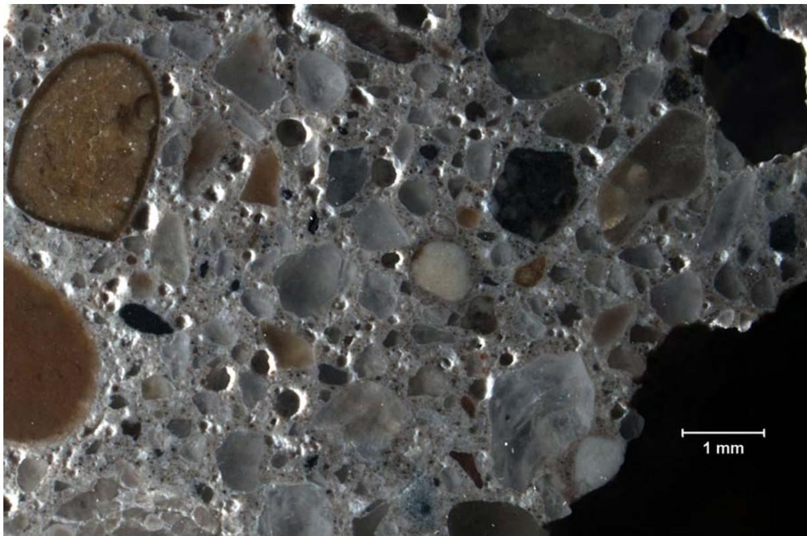
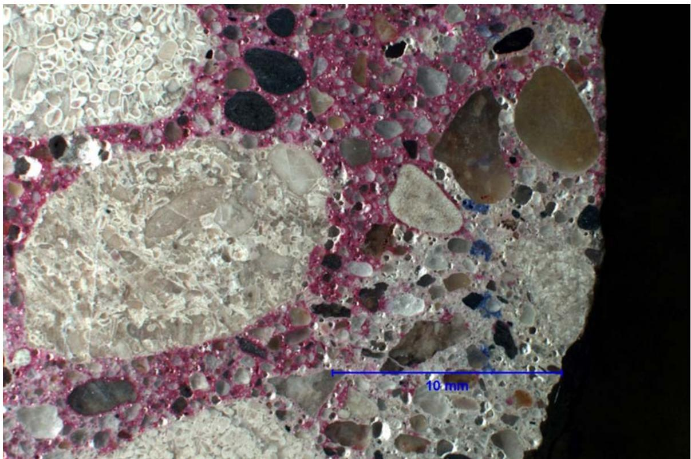
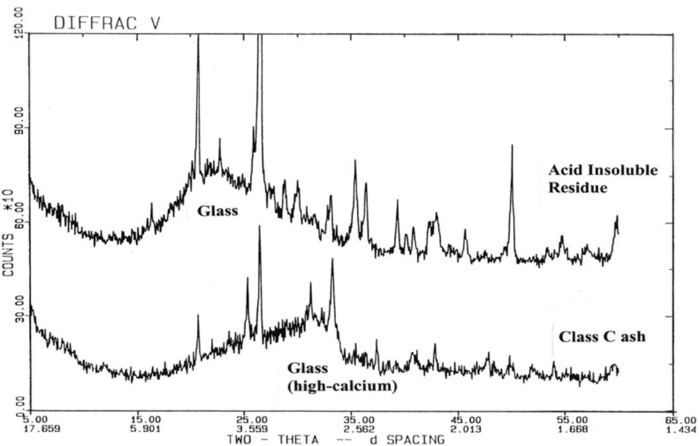
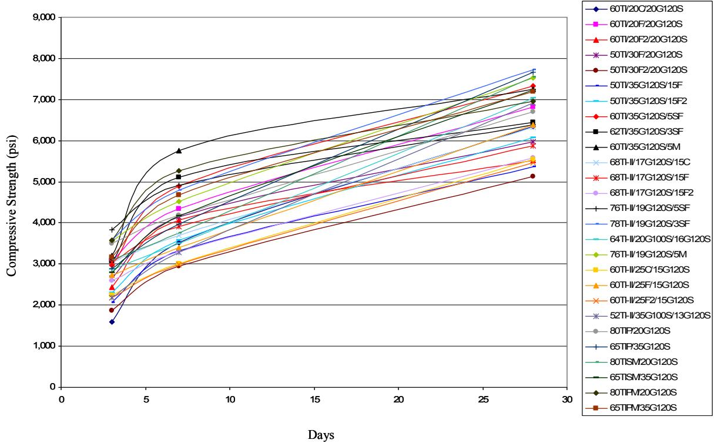
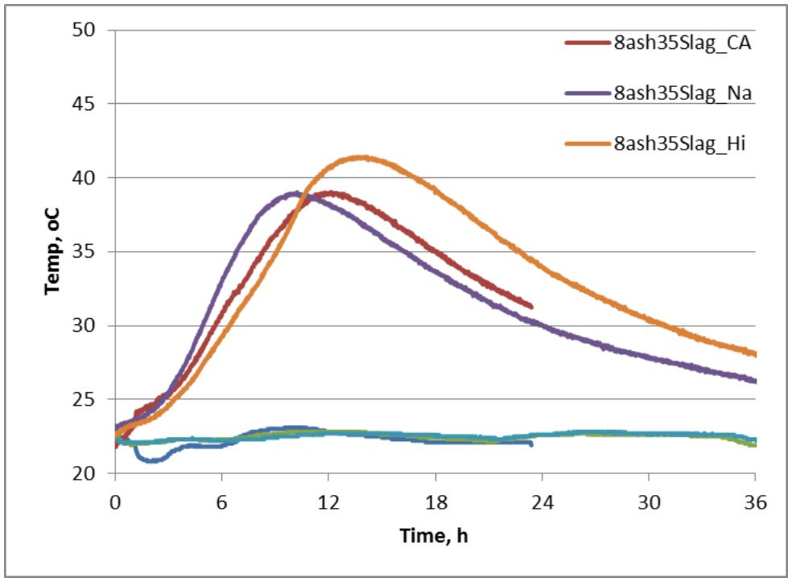
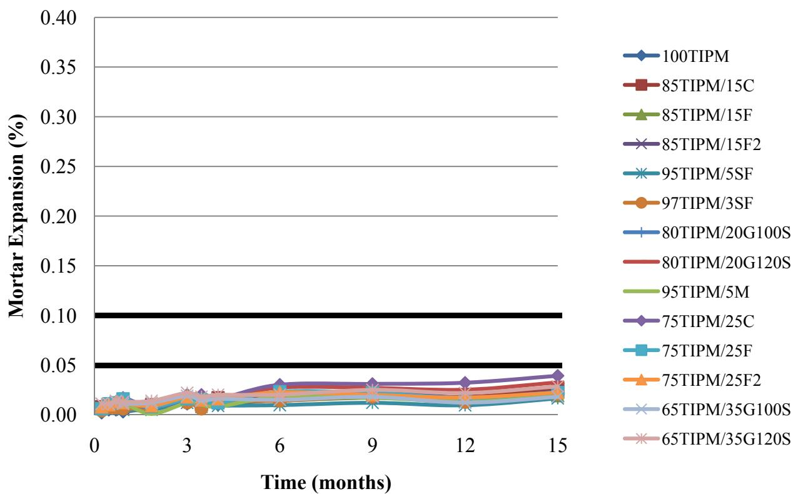
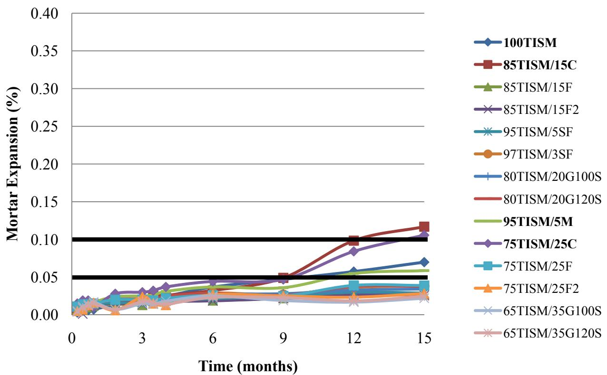

Sulfate Attack
Sulfate Attack is classified as a Materials-Related Distress (MRD) because it involves the chemical degradation of cementitious binder components rather than structural overload or fatigue, aligning with research that identifies sulfate attack resistance as a key durability characteristic to be investigated alongside other premature materials-related distress issues in concrete pavements [9]. It is defined as the chemical deterioration of concrete caused by reactions between sulfate ions (from soil, groundwater, or seawater) and hydration products in hardened cement paste, leading to expansion, cracking, and loss of strength [1].
Sources (14)
Mechanisms of Sulfate Attack and Deterioration
Environmental sulfate attack can damage concrete due to the formation of gypsum, ettringite, and thaumasite leading to spalling, strength reduction, and mass loss at low temperatures [2]. Secondary ettringite deposition can line and fill entrained air voids, compromising the effectiveness of the air system and overall concrete durability [3], with blast furnace slag aggregate potentially serving as a sulfur source that contributes to significant ettringite deposition within the air void system [3]. This ettringite infilling occurs during saturation by deicer solutions without requiring prior concrete distress, and the sulfate may be sourced from surrounding soils or the concrete materials themselves [4]. Specifically, secondary ettringite deposition can fill fine air void spaces adjacent to joints, reducing entrained air volume from original levels (e.g., 5.4% down to 3.5%) and increasing the spacing factor beyond acceptable freeze-thaw resistance limits [4]. Poor joint drainage facilitates a continuous supply of deicer-laden solutions, leading to saturation and progressive freeze-thaw distress at joints where air void systems have been compromised by secondary crystalline fillings [4]. In severely distressed joint cores, secondary ettringite with portlandite fills smaller entrained-sized void spaces within approximately 10-20mm of the joint plane, rendering that concrete layer non-durable [4].

#2 DESCRIPTION: Much of the finer air voidspaces in the concrete paste, proximate to the joint distress and at 55mm depth in the core, are filled with secondary ettringite 5x [4]Furthermore, carbonation in sulfate-affected concrete typically ranges from negligible to 6mm depth from top surfaces, proceeding along fine sub-vertical drying shrinkage microcracks [4]. While joint sealants may cleanly de-bond from sawcut vertical surfaces while remaining darkly stained by sulfate solutions, this indicates chemical interaction even when physical separation occurs [4]. Additionally, the formation of expansive oxychloride causes cracking at regular intervals parallel to the saw cut and/or loss of paste, leaving clean aggregates in the voids [5].

DESCRIPTION: Carbonation (unstained paste) ranges from negligible to 10mm depth from the sawcut and distressed joint surface of the core (R). [4]Factors Influencing Concrete Permeability and Porosity
The permeability of concrete significantly influences its resistance to sulfate attack by limiting the transport of ions and water necessary for the reaction mechanisms [6]. While high cement content can negatively impact durability by increasing both chloride penetration and shrinkage, which raises the risk of cracking that shortens concrete longevity [7], carbonation rates proceed quickly initially but then slow rapidly due to a denser pore structure attributed to pozzolanic reactions [2]. Additionally, concrete with a proper air-void system can resist harsh conditions for 140 freezing-thawing cycles, as resistance may be attributed to adequate internal spacing [5].
 Effect of cement content on concrete compressive strength [7]
Effect of cement content on concrete compressive strength [7]
Mitigation via Supplementary Cementitious Materials (SCMs)
Supplementary Cementitious Materials can minimize or eliminate cracking related to sulfate attack, and scaling resistance in concrete is predominantly controlled by the type of supplementary cementitious materials used, rather than mixing or curing temperatures [8]. For instance, a tricalcium aluminate-free portland cement with fly ash and GGBFS showed little to no surface damage after five years of exposure to magnesium sulfate (MgSO4), with XRD analysis confirming neither ettringite nor thaumasite were present near the concrete surface [2]. Additionally, lithium is being investigated as an additive to mitigate expansion, though cost remains a barrier to its practical application [3].
Regarding electrochemical modifications, electrochemically modified cement (EMC) technology involves intensive grinding and activation of cement with pozzolans without additives, which creates submicrocracks and microdefects that allow deeper water penetration and higher binding capacity utilization. This process activates inert fillers like fine quartz sand and has been shown to provide slightly improved sulfate resistance compared to conventional portland pozzolan-blended cements [9].
Fly Ash Classifications and Performance
Fly ash derived from anthracite, bituminous, or lignite coal combustion exhibits variable chemical compositions and performance characteristics depending on the specific coal source and power plant burning methods [10]. The calcium oxide content in fly ash serves as a primary indicator of its reactivity, pozzolanic behavior, and capacity to mitigate expansion from alkali-silica reaction and sulfate attack [10]. Historically, the predicted vs. actual sulfate resistance of fly ash was a contentious issue that led to improved classification schemes, such as CSA CaO-based categories. Under these CSA specifications, fly ash is classified into three types based on bulk calcium content: Type F (less than 8% CaO), Type CI (8%–20% CaO), and Type CH (greater than 20% CaO) [1]. While Class F fly ash enhances sulfate resistance of concrete, Class C (high-calcium) fly ash does little to enhance sulfate resistance at common dosage levels (15%–25%). Reflecting its complex mineralogy and self-cementitious behavior, Class C fly ash is significantly more soluble in hydrochloric acid (about 70%) compared to Class F fly ash (less than 15%) [1].

X-ray diffractograms of Class C fly ash and the acid-insoluble residue from the fly ash (note the change in the glass type; the acid-insoluble portion of the fly ash is the pozzolanic fraction of the ash) [1]Regarding practical applications, a 25% fly ash replacement rate increases setting time while greatly lowering the heat of hydration in concrete applications [2]. Mixtures containing Class C fly ash generally perform well in reducing surface scaling severity, with the notable exception of specific regional variations such as those observed in Iowa [8]. However, mixture designs containing Class C fly ash often experience severe damage or complete fracture by 15 months of exposure, even if initial expansions are below the moderate resistance threshold [11].
 Effect of admixture combination on the percent of air voids less than 300 μm for mixtures containing large amounts of Class C fly ash [2]
Effect of admixture combination on the percent of air voids less than 300 μm for mixtures containing large amounts of Class C fly ash [2]
Slag (GGBFS) and Silica Fume Applications
ASTM specifications grade slag into three categories (80, 100, and 120) based on compressive strength activity index, with higher grades indicating more rapid strength gain [1]. Higher slag replacement levels (40%+) are used when sulfate resistance is required [1], and higher slag replacement levels are commonly used when ASR or sulfate resistance is required, whereas lower ranges are typically limited by setting time or hardening constraints [1]. Furthermore, a 50% GGBFS replacement rate is required to produce concrete resistant to harsh chloride environments in aggressive marine settings [2].

Strength gain for mortar mixtures containing Grade 120 GGBFS [2]Regarding other additives, metakaolin concrete heat of hydration curves can closely match those of normal portland cement when metakaolin is incorporated at amounts less than 10% by weight [2].
Ternary Blended Cement Systems
Ternary blended cement concrete mixtures have been shown to reduce carbon dioxide emissions compared to conventional portland cement [8]. Regarding expansion characteristics, binary blends of Type IP cement and metakaolin have demonstrated the minimum expansion among tested ternary mixtures containing Class C fly ash [11], while mixtures combining Type I-II cement, Grade 120 GGBFS, and Class F or F2 fly ash exhibit the least sulfate expansion among ternary combinations [11]. Additionally, a ternary blended cement with GGBFS and fly ash produced a low adiabatic temperature rise of 47.9°C, representing about a 75% reduction compared to normal portland cement concrete [2].

Temperature data for ternary mixtures with 35% slag cement [8]In terms of permeability, the addition of silica fume significantly reduces oxygen permeability in ternary blends, whereas fly ash has little effect on this specific permeability metric [2]. Furthermore, a ternary system incorporating both fly ash and silica fume gradually decreased chloride permeability from 7 to 90 days, with silica fume proving superior at reducing permeability at later ages [2].
Aggregate Selection and Recycled Concrete Aggregate (RCA)
Recycled concrete aggregate (RCA) processed from environments with freeze-thaw exposure may contain elevated chloride levels within the mortar matrix, which can increase the potential for steel corrosion in reinforced applications [12]. Because RCA does not pass the standard sulfate soundness test using sodium sulfate, modified testing protocols—such as requiring only magnesium sulfate or adjusting acceptance limits—are necessitated [12]. Furthermore, concrete specimens containing more than 50 percent RCA coarse aggregate exhibit a small but measurable increase in expansion when tested in sodium sulfate solutions [12].
To improve performance, aggregates must be selected to avoid internal stress from freezing water within the aggregate, as the degree of saturation, porosity, permeability, and size determine this stress [7]. Additionally, increasing the maximum size of aggregate enhances durability by reducing the volume of cement paste, which is the component most sensitive to chemical attack [7].
Curing, Water-Cement Ratio, and Admixtures
To ensure durability in concrete paving, curing temperature management guidelines are recommended over fixed cut-off dates to account for the effect of curing temperature on pozzolanic reaction in SCM concrete paving [13]. This is particularly important because poor curing of GGBFS and fly ash mixtures produces poor air permeability results, demonstrating that proper curing is critical for durability performance [2]. Regarding mix design, high water-cement ratios exceeding 0.50 can significantly reduce resistance to deterioration and lead to extensive cracking at construction joints [3]. Conversely, water-reducing agents improve sulfate resistance by lowering the water-to-cement ratio, which reduces concrete porosity and limits the penetration of aggressive substances [7]. Furthermore, concrete with an adequate air void system demonstrates improved resistance to sulfate attack in addition to freeze-thaw durability [6].
 Effects of curing temperature on initial set time of concrete [13]
Effects of curing temperature on initial set time of concrete [13]
Advanced techniques such as internal curing using saturated lightweight aggregates or superabsorbent polymers (SAPs) can decrease concrete permeability and thereby improve resistance to environmental attack by ensuring a higher degree of hydration in the cement paste [14]. The beneficial effects of internal curing are particularly pronounced in mixtures with a water-to-cement ratio lower than 0.42, where the risk of desiccation is high and external water cannot easily penetrate into the concrete [14]. Additionally, research has specifically investigated the influence of internal curing combined with viscosity modifiers on resistance to sulfate attack in concrete [14]. Finally, sealers can reduce moisture and chloride ion penetration by coating pore walls to render them hydrophobic or sealing pores with low-viscosity pore blockers [5].
 Air (gas) permeability index for concrete [5]
Air (gas) permeability index for concrete [5]
Testing Methods and Durability Standards
Phase 1 screening utilizes ASTM C 1012 (mortar bar test), while the USBR test method (concrete prism) is used for Phase 2 verification. In HIPERPAV analyses for summer conditions, the minimum difference between concrete strength and thermal/moisture stress ranged from 23 to 37.7 psi depending on slag replacement levels [13], whereas during spring and fall conditions with lower curing temperatures, this minimum difference can decrease to as low as 6.2 psi [13]. Phase 2 laboratory studies on concrete include durability testing for freeze-thaw resistance, chloride permeability, scaling, and specific sulfate resistance evaluations [1]. To predict long-term strength and durability potential, specifically for evaluating sulfate attack resistance alongside freeze-thaw durability and ASR resistance in mix designs intended for 30-year or longer service lives, accelerated testing methods are required; these tests enable evaluation of mix performance before construction and after placement via core samples [9]. Furthermore, a national database compiling data on mix proportions, materials, locations, and long-term durability performance can serve as an expert system foundation to predict sulfate attack susceptibility based on historical success or failure patterns, allowing engineers to assess whether specific material combinations are prone to inappropriate sulfate attack for particular mixture and site conditions without extensive laboratory testing [9].
 Relationship between mortar and concrete strength (cured at 1 0 ° C ) [13]
Relationship between mortar and concrete strength (cured at 1 0 ° C ) [13]
According to ASTM C1012 standards, the maximum allowable expansion for high sulfate resistance is defined as 0.05% at 6 months and 0.10% at 12 months [11]. Additionally, a minimum surface resistivity of 10 kΩ/cm at 28 days is required for sulfate resistance, alongside expansion limits defined by ASTM C1012 [8]. Ternary cementitious mixtures significantly reduce diffusion coefficients and increase electrical resistivity, which correlates with improved resistance to chloride ion penetration [8]. Finally, the use of air permeability tests is not an effective way to characterize the durability of concrete treated with sealers because there is no correlation between air permeability index and water absorption rate [5].

ASTM C1012 sulfate mortar expansions of mixtures containing Type IP(6) cement [11]Case Studies: 2011 Ternary Concrete Results
During the 2011 concrete phase, 48 concrete mixtures were tested for sulfate expansion per ASTM C1012 [11]. Findings indicated that Class C fly ash was detrimental, as 7 of 22 mixture designs containing Class C fly ash experienced severe damage or complete fracture by 15 months, with the Class C ash reducing sulfate resistance regardless of secondary SCM [11]. Furthermore, mixtures containing metakaolin with Class C fly ash also experienced complete fracture by 15 months [11]. In contrast, all mixtures containing Class F or F2 fly ash passed extended sulfate exposure with low expansions [11], and Grade 100 and 120 GGBFS provided excellent sulfate resistance in all combinations [11].
Among the tested materials, Type IPM cement (94% TI/II + 6% silica fume) was the best, exhibiting the least expansion at 0.02% at 6 to 15 months [11]. Consequently, recommended formulations for reliable sulfate resistance include ternary combinations of Type IP or TIPM cement with Class F/F2 fly ash, or Type I cement with GGBFS and Class F fly ash [11].
Limitations and Performance Constraints
SCM concrete often exhibits slow hydration accompanied by slow setting and low early-age strength, an effect that intensifies with higher SCM proportions and low curing temperatures [13]. While high volume fly ash and GGBFS replacements can reduce resistance to deicer salt scaling, even when water-to-cementitious materials ratios are reduced [2], a mixture design of 50% Type I cement, 35% Grade 120 GGBFS, and 15% Class C fly ash can initially classify as high sulfate resistance but may experience a drastic increase in expansion rate over subsequent months [11]. Regarding chloride permeability, silica fume mixtures outperform all other tested mixtures for limited curing conditions [2]; specifically, silica fume concrete shows the greatest reduction in chloride penetration depth, followed by GGBFS concrete and then fly ash concrete [2]. Although specimens subjected to cyclic wetting and drying in seawater exhibited higher chloride values, the addition of SCMs improved overall performance [2], with a 40% fly ash replacement rate determined to be optimal for chloride resistance durability in aggressive environments [2] and a 30% fly ash replacement rate being sufficient for chloride resistance durability in mild chloride environments [2].

ASTM C1012 sulfate mortar expansions of mixtures containing Type IS(20) cement [11]In terms of frost protection, sealers delayed the time to reach the critical degree of saturation, but prolonging this time was not reflected in resistance to frost action [5]. However, in concrete with a marginal air-void system, sealers provided extra protection and increased resistance against frost action cycles [5].
 Degree of saturation for concrete specimens: mAir (top left), mOXY (top right), and mDcrack (bottom) [5]
Degree of saturation for concrete specimens: mAir (top left), mOXY (top right), and mDcrack (bottom) [5]
Related
References
- S. Schlorholtz, "Development of Performance Properties of Ternary Mixes: Scoping Study (Phase 1)," Center for Portland Cement Concrete Pavement Technology, Iowa State University, Ames, IA, Rep. DTFH61-01-X-00042 (Project 13), 2004. [Online]. Available: https://www.cptechcenter.org/wp-content/uploads/2018/03/ternary_mixes.pdf
- P. Tikalsky, V. Schaefer, K. Wang, B. Scheetz, T. Rupnow, A. St. Clair, M. Siddiqi, and S. Marquez, "Development of Performance Properties of Ternary Mixes, Phase 1," Center for Transportation Research and Education, Ames, IA, Rep. TPF-5(117), 2007. [Online]. Available: https://www.intrans.iastate.edu/research/completed/development-of-performance-properties-of-ternary-mixes-phase-1/
- J. Grove, F. Bektas, and H. Gieselman, "Southeast Michigan Local Road Concrete Pavement Durability Study," National Concrete Pavement Technology Center, Ames, IA, 2006. [Online]. Available: https://www.cptechcenter.org/wp-content/uploads/2018/03/mi_pavement_durability.pdf
- P. Taylor, L. Sutter, and J. Weiss, "Investigation of Deterioration of Joints in Concrete Pavements," National Concrete Pavement Technology Center, Ames, IA, Rep. TPF-5(224), 2012. [Online]. Available: https://www.intrans.iastate.edu/wp-content/uploads/2018/03/joint_deterioration_penetrating_sealers_field_study_w_cvr.pdf
- J. T. Kevern, G. Adil, P. Taylor, S. Sadati, and K. Wang, "Evaluation of Penetrating Sealers for Concrete," National Concrete Pavement Technology Center, Iowa State University, Ames, IA, Rep. TR-765, 2022. [Online]. Available: https://www.intrans.iastate.edu/wp-content/uploads/2022/06/concrete_penetrating_sealers_eval_w_cvr.pdf
- J. Grove, G. Fick, T. Rupnow, and F. Bektas, "Material and Construction Optimization for Prevention of Premature Pavement Distress in PCC Pavements," National Concrete Pavement Technology Center, Ames, IA, Rep. TPF-5(066), 2008. [Online]. Available: https://www.intrans.iastate.edu/wp-content/uploads/2018/03/mco-final.pdf
- P. Taylor, F. Bektas, E. Yurdakul, and H. Ceylan, "Optimizing Cementitious Content in Concrete Mixtures for Required Performance," National Concrete Pavement Technology Center, Ames, IA, 2012. [Online]. Available: https://www.intrans.iastate.edu/wp-content/uploads/2018/03/taylor_ocm_w_cvr2.pdf
- P. Taylor, P. Tikalsky, K. Wang, G. Fick, and X. Wang, "Development of Performance Properties of Ternary Mixtures: Field Demonstrations and Project Summary," National Concrete Pavement Technology Center, Ames, IA, Rep. TPF-5(117), 2012. [Online]. Available: https://www.intrans.iastate.edu/wp-content/uploads/2018/03/ternary_final_w_cvr.pdf
- D. Harrington, R. Rasmussen, D. Merritt, T. Cackler, and P. Taylor, "Long-Term Plan for Concrete Pavement Research and Technology—The Concrete Pavement Road Map (Second Generation): Volume II, Tracks (FHWA-HRT-11-070)," National Center for Concrete Pavement Technology, Iowa State University, Ames, IA, 2012. [Online]. Available: https://www.fhwa.dot.gov/publications/research/infrastructure/pavements/pccp/11070/11070.pdf
- B. Shafei, P. Taylor, B. Phares, and M. Kazemian, "Fiber-Reinforced Concrete for Bridge Decks," Bridge Engineering Center, Iowa State University, Ames, IA, Rep. TR-767, 2021. [Online]. Available: https://www.intrans.iastate.edu/wp-content/uploads/2021/12/fiber-reinforced_concrete_in_bridge_decks_w_cvr.pdf
- P. Tikalsky, P. Taylor, S. Hanson, and P. Ghosh, "Development of Performance Properties of Ternary Mixtures: Laboratory Study on Concrete," National Concrete Pavement Technology Center, Ames, IA, Rep. TPF-5(117), 2011. [Online]. Available: https://www.intrans.iastate.edu/research/completed/development-of-performance-properties-of-ternary-mixtures-laboratory-study-on-concrete/
- S. Garber, R. Rasmussen, T. Cackler, P. Taylor, D. Harrington, G. Fick, M. Snyder, T. Van Dam, and C. Lobo, "A Technology Deployment Plan for the Use of Recycled Concrete Aggregates in Concrete Paving Mixtures," National Concrete Pavement Technology Center, Ames, IA, 2011. [Online]. Available: https://www.intrans.iastate.edu/wp-content/uploads/2018/03/RCA-Draft-Report_final-ssc.pdf
- K. Wang and Z. Ge, "Evaluating Properties of Blended Cements for Concrete Pavements," Department of Civil, Construction and Environmental Engineering, Iowa State University, Ames, IA, 2003. [Online]. Available: https://www.intrans.iastate.edu/wp-content/uploads/2018/03/blended_cements-1.pdf
- A. Daghighi, P. Taylor, H. Ceylan, and Y. Zhang, "Impacts of Internally Cured Concrete Paving on Contraction Joint Spacing Phase II," National Concrete Pavement Technology Center, Iowa State University, Ames, IA, Rep. TR-746, 2021. [Online]. Available: https://www.cptechcenter.org/wp-content/uploads/2021/05/IC_concrete_paving_impacts_phase_II_field_impl_w_cvr.pdf
Feedback on this page